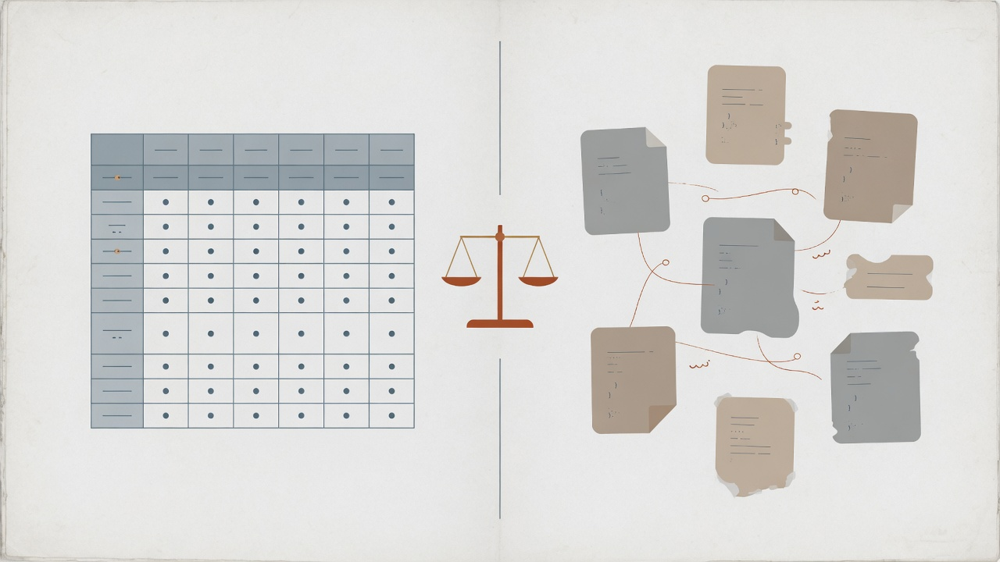

From our own experience designing and operating a highly available, highly scalable ecommerce platform, we have come to realize that relational databases should only be used when an application really needs the complex query, table join and transaction capabilities of a full-blown relational database. In all other cases, when such relational features are not needed, a NoSQL database service like DynamoDB offers a simpler, more available, more scalable and ultimately a lower cost solution.
— Werner Vogels, CTO Amazon.com on when to use RDBMS

I came across this quote in an article while researching DynamoDB. I respect Werner a lot, but take his database-selection advice with a pinch of salt — he has a database to sell.
Most products never hit the kind of scale that relational databases cannot serve. RDBMSs have been around for decades and still work fine, including at large scale. There are mature open source options, well-understood schemas, solid support for filtering and aggregation, big communities, plenty of people who already know the tools, default framework integrations, and a deep ecosystem of operational tooling.
RDBMS are great for almost everything, unless…
Relational systems are easy to work with. Monitoring, backup, and ops tooling is strong (and often free). They cover most use cases, help is easy to find, and — best of all — you probably already know them. Unless I have one of the requirements below, I would start with a single-node relational database.
Super high availability
The database server process is a single point of failure. If it crashes, or if you take it down for planned or unplanned maintenance, the system goes with it.
If you need something close to 100% availability, look at clustered relational setups or distributed databases that trade consistency for availability — Cassandra, for example. Until that requirement is real and written down, stick with the boring option.
Flexible schema
One of the great strengths of relational databases is the schema itself — modelling, normalization, and related ideas. You can design a solid model without knowing every query pattern up front, and it usually holds up. That said, not all data maps cleanly to tables and joins. Postgres has some help via hstore and JSON, but relational engines still prefer fixed schemas that play nicely with normalization. Flexible / EAV-style shapes tend to go badly in an RDBMS.
If you genuinely need a flexible schema — and it is worth asking twice — look at NoSQL options. Do not pick them just because the schema feels slightly awkward on day one.
Horizontal scaling
If you expect data and traffic to grow beyond one machine, a single-node relational database will not be enough forever. There is only so much RAM and CPU you can throw at one box. Eventually you hit that wall, and then the choice is either a NoSQL system or a relational cluster.
Epilogue
NoSQL is not a panacea, and RDBMSs are still the right default for most applications. Unless you have a clear reason not to use a relational database, stick with one. Prefer the boring system until a real requirement forces something else — and write that requirement down so the next person does not re-open the debate from scratch.